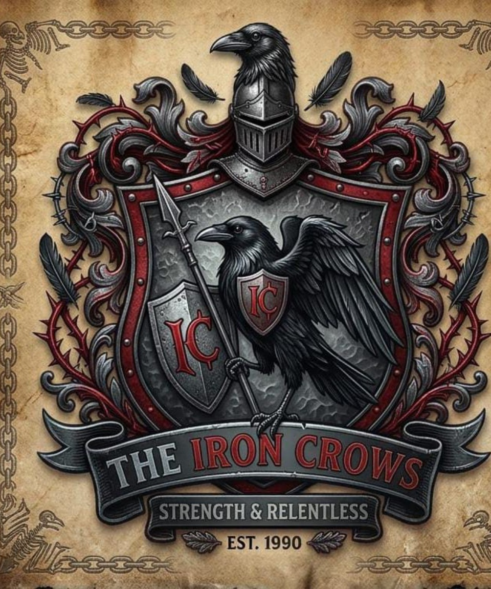

EST. 1907 · MASCULINA
Golden Knights
Strength & Honor
Uma fraternidade tradicional de elite, construída sobre lealdade, honra, discrição e hierarquia.
Três casas. Três histórias. Três maneiras diferentes de sobreviver à Universidade Lomonosov.
Uma fraternidade tradicional de elite, construída sobre lealdade, honra, discrição e hierarquia.

Uma fraternidade marcada pela liberdade, pela lealdade e pela responsabilidade pelas próprias escolhas. Poucas regras e muita liberdade fazem parte de sua identidade.

Uma fraternidade conhecida pela resistência, inteligência, discrição e pelo cuidado com informações internas.